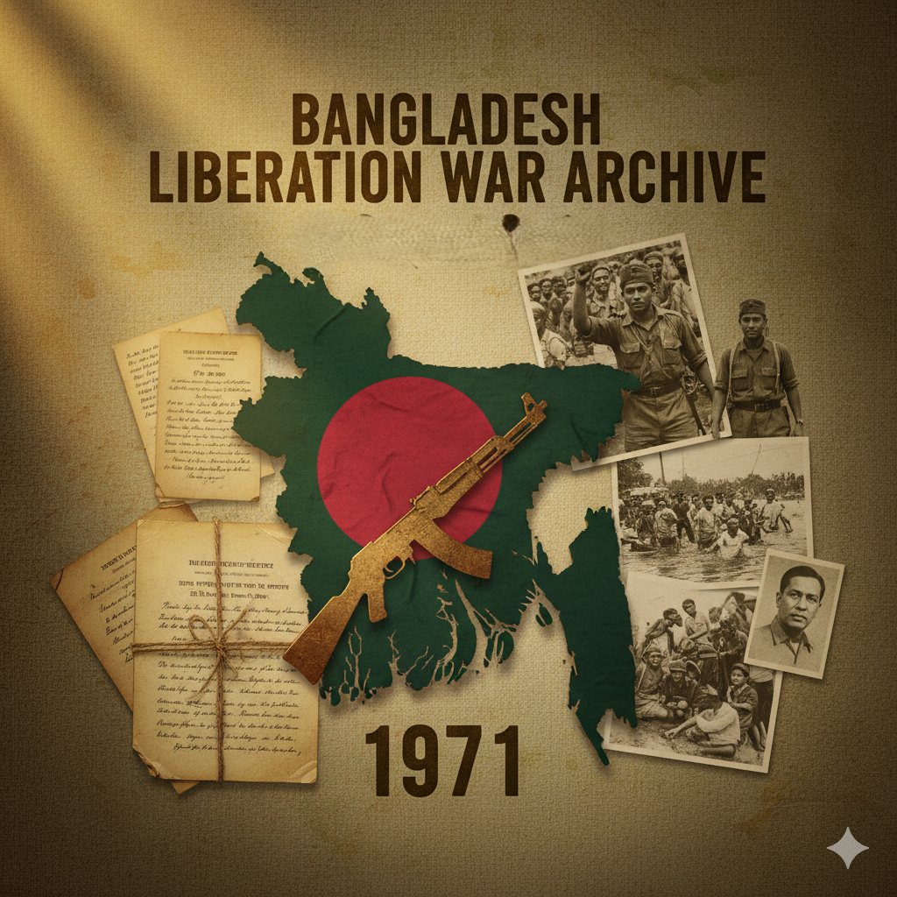
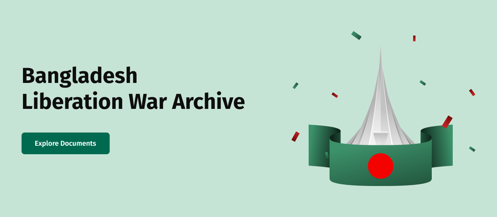

These timeless symbols reflect the courage, sacrifice, and unity of the Bangladeshi people during the Liberation War of 1971.

Located in Savar, this monument honors the martyrs who sacrificed their lives for Bangladesh's independence.

The red circle represents the blood of freedom fighters, while the green symbolizes the land and youth of Bangladesh.

The radio center that spread news, patriotic songs, and hope to millions during the Liberation War — inspiring freedom fighters across the nation.
This proclamation declared the independence of Bangladesh and stands as a core historical document from the Liberation War.
Correspondence between provisional government offices and allied authorities during the early months of the war.
Excerpts from the formal surrender marking the end of the conflict and the beginning of independence.
Hear the voices of the brave freedom fighters who fought for Bangladesh’s independence. Their memories and stories keep the spirit of the Liberation War alive.

Location: Khulna, Bangladesh
A Mukti Bahini member sharing his experiences from the frontlines — the struggles, the courage, and the hope that led to victory.

Location: Rangpur, Bangladesh
A nurse and freedom fighter who treated injured soldiers and civilians during the war, sharing her untold stories of bravery.

Location: Mymensingh, Bangladesh
A sector commander recounts strategic missions and the determination that united the people in the fight for freedom.
A visual journey through the struggles, courage, and triumphs of the Bangladesh Liberation War.